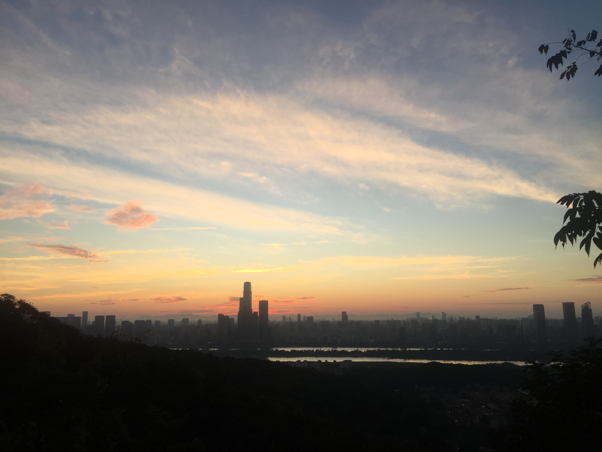

嘿~! 张彦熙，我 真的 好想你，我想建立一个专属于我们的空间，于是这个网站就诞生了，这个网站以后每年都会更新，目的没有其他的，只是为了记录下我们这一年的那些经历。
 嘿~ 还记得故事的开始吗?
2024年过年，我祝你新年快乐，而你也回了我消息，还问我邵阳有什么好玩的。好可惜啊，我也不知道邵阳有什么好玩的。 而至此之后，我们的之间交流也就密切起来了。
此前的覃睿峰是那么的执拗、讨厌，爱做那些无趣的事引起张彦熙注意，甚至还会让张彦熙在全班面前尴尬(据其他人回忆是这样的，我其实不太记得了 /尴尬，嘿嘿/ 你知道的 我记忆不太好)。
而此前的张彦熙呢？成绩大涨、活泼、可爱又高又好看，还温柔讨人喜。我还记得那时候张彦熙还讨厌覃睿峰呢(应该是吧，覃睿峰那么讨厌，如果这都不生气的话那这个人脾气实在太好了)。 而就在这一次回信息之后，覃睿峰和张彦熙，两个性格几乎完全不相同的人，就这么奇迹的交上了朋友。
123
---未完待续---